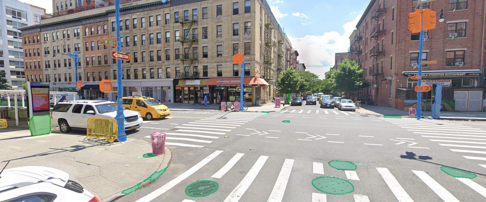
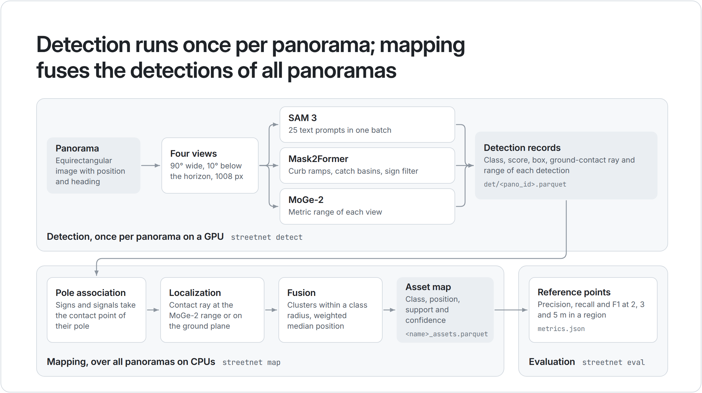
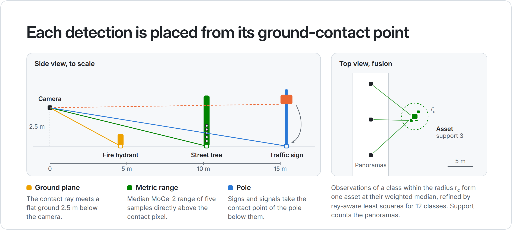
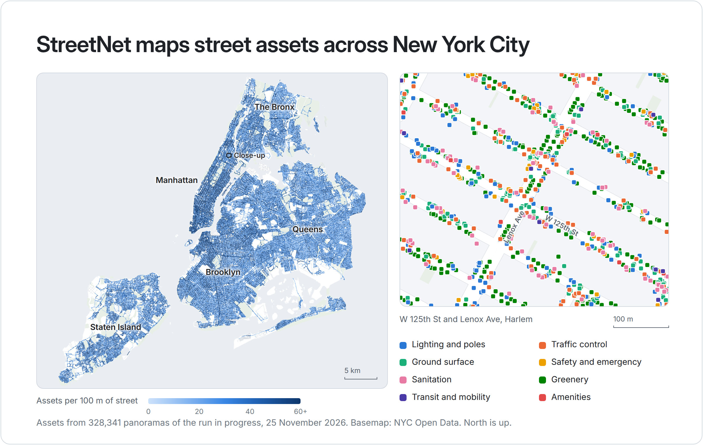

StreetNet
An automated, ready-to-deploy asset management system that maps street assets from street-level panoramas.

Imagery © GoogleVideos
Both videos show the Upper Manhattan pilot study, from which the released pipeline was derived.
Trailer 1:50
The asset classes and the interactive map of the pilot, with assets inspected in their source panoramas.
Methodology 6:46
The pilot's camera model, segmentation, ranging experiments, multi-view fusion, threshold search, evaluation and error audit.
The videos show the pilot configuration: eight views and 34 prompts per panorama and 18 mapped classes. The pilot's map application and condition layers are not part of this repository. The released pipeline uses four views and 25 prompts and maps 22 classes. Imagery © Google.
Method
Detection runs once per panorama on a GPU. Mapping reads the detections of all panoramas, places each one in a metric frame and clusters the detections of the same asset.

Views
Four pinhole views per panorama, 90° wide and pitched 10° down, at 1008 × 1008 px.
Segmentation
SAM 3 with 25 text prompts in one batch. Mask2Former trained on Mapillary Vistas segments curb ramps and catch basins, and its labels filter sign detections on vehicles and signal heads.
Ground contact
The median column of the lowest rows of each mask. Its range is the median of five MoGe-2 samples on a strip directly above that pixel.
Placement
Trees, street lights, signs, signals, benches and bike racks are placed at their MoGe-2 range when it is available, the other classes on a ground plane 2.5 m below the camera.
Fusion
Detections of a class within a class-specific radius of 1 to 4 m form one asset at their weighted median, refined by ray-aware least squares for 12 classes. Support counts the panoramas; confidence is 1 − prod(1 − best score of each panorama).
City scale
Blocks of 1 km with a 60 m halo are mapped in parallel on CPUs. Detection takes 0.9 s per panorama on one GPU.




Classes
The map has 22 classes in eight groups. A class is defined by text prompts of SAM 3 or by a class of Mask2Former, so a run can use another vocabulary.
| Class | Prompts of SAM 3 or source | Mount | Placement |
|---|---|---|---|
| Lighting and poles | |||
| Street light | street light pole | ground | range |
| Sign pole | sign pole | ground | ground |
| Traffic control | |||
| Traffic signal | traffic light, pedestrian walk signal | pole | range |
| Traffic sign | traffic sign, parking regulation sign, street name sign | pole | range |
| Bus stop sign | bus stop sign | pole | range |
| Ground surface | |||
| Manhole cover | manhole cover | surface | ground |
| Catch basin | Mask2Former-Vistas: Catch Basin | surface | ground |
| Curb ramp | Mask2Former-Vistas: Curb Cut | surface | ground |
| Safety and emergency | |||
| Fire hydrant | fire hydrant | ground | ground |
| Bollard | bollard | ground | ground |
| Barrier | construction barrier | ground | ground |
| Fire alarm boxexperimental | fire alarm box | ground | ground |
| Sanitation | |||
| Trash can | trash can | ground | ground |
| Greenery | |||
| Street tree | tree trunk | ground | range |
| Planterexperimental | planter | ground | ground |
| Transit and mobility | |||
| Bus shelter | bus stop shelter | ground | ground |
| Bike rack | bike rack | ground | range |
| Bike share dockexperimental | bike share docking station | ground | ground |
| Parking meterexperimental | parking pay station, parking meter | ground | ground |
| Amenities | |||
| Bench | bench | ground | range |
| Mailbox | mailbox | ground | ground |
| LinkNYC kiosk | LinkNYC kiosk | ground | ground |
Placement: range classes are placed at the MoGe-2 range along the contact ray, ground classes where that ray meets the ground plane; pole-mounted classes use the contact point of the pole below them. Experimental classes had a precision below 0.67 in the pilot study's visual audit of up to 12 detections per class, or were not audited.
New York City
The New York City run covers 1,170,687 panoramas of the five boroughs, processed coarse to fine so that the panoramas of each finished level form an even sample of the city.


Version v0.1 (preview, plan levels up to 18): 629,271 assets in 22 classes from 52,269 panoramas captured between 2007 and 2026. Plan levels up to 18 (one panorama per cell of about 116 m) across the five boroughs; minimum support capped at 1.
The evaluation region is the union of 15 m disks around the 722 mapped panoramas that lie within 20 m of a panorama of the Upper Manhattan pilot study and at least 30 m from its development split, on which the fusion parameters were tuned. Over 4,153 ground-truth assets of NYC Open Data in that region, the map has precision 0.281, recall 0.293 and F1 0.287 at a matching radius of 3 m (table).
The dataset holds the asset map, the reference points and the evaluation region, and no imagery.
Download the map
hf download mehmetkeremturkcan/streetnet-nyc --repo-type dataset --local-dir streetnet-nycRead it with pandas
import pandas as pd
assets = pd.read_parquet("hf://datasets/mehmetkeremturkcan/streetnet-nyc/data/assets.parquet")
hydrants = assets[(assets["class"] == "fire_hydrant") & (assets["support"] >= 2)]Accuracy
Predictions and reference points of the same class within 3 m are matched one to one inside an evaluation region in the pilot area, which excludes the panoramas on which the fusion parameters were tuned.
| Class | Ground truth | Predicted | Precision | Recall | F1 | Median error (m) |
|---|---|---|---|---|---|---|
| Street tree | 1,457 | 1,591 | 0.521 | 0.564 | 0.542 | 2.22 |
| Traffic sign | 913 | 634 | 0.146 | 0.101 | 0.119 | 2.26 |
| Sign pole | 485 | 306 | 0.039 | 0.025 | 0.030 | 2.91 |
| Street light | 351 | 781 | 0.097 | 0.217 | 0.134 | 1.58 |
| Curb ramp | 307 | 219 | 0.542 | 0.378 | 0.445 | 1.40 |
| Fire hydrant | 186 | 115 | 0.426 | 0.263 | 0.326 | 2.27 |
| Catch basin | 176 | 113 | 0.186 | 0.119 | 0.145 | 2.38 |
| Bike rack | 129 | 71 | 0.070 | 0.039 | 0.050 | 2.11 |
| Trash can | 51 | 314 | 0.029 | 0.176 | 0.049 | 1.97 |
| Parking meter | 29 | 16 | 0.125 | 0.069 | 0.089 | 2.49 |
| Fire alarm box | 23 | 2 | 0.000 | 0.000 | 0.000 | n/a |
| Bench | 19 | 182 | 0.055 | 0.526 | 0.100 | 2.55 |
| Bus shelter | 14 | 7 | 0.429 | 0.214 | 0.286 | 2.57 |
| LinkNYC kiosk | 13 | 0 | n/a | 0.000 | n/a | n/a |
| All classes | 4,153 | 4,351 | 0.281 | 0.293 | 0.287 |
Reference points come from NYC Open Data. Several layers are partial or dated: sign work orders record the signs the city has worked on, the tree census dates from 2015 and the ramp survey from 2019, and a detected asset missing from its layer counts as a false positive. The median error is over pairs matched within 5 m. The evaluation gives the protocol and the reference layers.
Throughput
Measured in the New York City run on four NVIDIA RTX PRO 6000 Blackwell Max-Q GPUs, one detection process per GPU.
| Stage, per panorama | GPU time |
|---|---|
| SAM 3: 4 views × 25 prompts, lazy mask head, compiled | 0.45 s |
| Mask2Former Swin-L: 4 views at 1024 px | 0.27 s |
| MoGe-2: 4 views, float16 | 0.14 s |
- End to end
- 0.90 s per panorama and GPU
- Four GPUs
- 16,000 panoramas per hour
- GPU memory
- 33 to 37 GB per process
- Detections
- 33 KiB per panorama
- Details
- Optimizations and their effect on the output
Quickstart
Detection needs Linux, an NVIDIA GPU and Python 3.10 to 3.12. Mapping and evaluation run on CPUs with Python 3.10 or newer.
1Install
git clone https://github.com/mkturkcan/streetnet.git && cd streetnet
pip install -e ".[detect]" # for mapping and evaluation on CPUs: pip install -e .
hf auth login # SAM 3 is gated: accept its license at huggingface.co/facebook/sam3 first2Detect, one process per GPU
streetnet detect --index panos.parquet --images panoramas/ --out runs/city --gpus 0,1,2,3 --compile
streetnet status --index panos.parquet --run runs/city3Map
streetnet map --index panos.parquet --run runs/city --name city4Evaluate against reference points
streetnet eval --index panos.parquet --map runs/city/map/city_assets.parquet --gt reference.parquetInputs and installation notes
- The index has one row per panorama:
pano_id,lat,lon,heading, and optionallypitch,rolland the camera heighth. Reference points havegt_key,lonandlat. The data formats list all columns. - The checkpoints of SAM 3, Mask2Former and MoGe-2 download on first use. SAM 3 requires numpy below 2.0.
- MoGe installs
opencv-python, which needslibGL. On servers without it, such as CUDA containers, replace it withopencv-python-headless. - Tested with Python 3.11, PyTorch 2.12 with CUDA 13.0, transformers 5.8.1, SAM 3 at commit
96914d2and MoGe at commit925b8ed.
Documentation
Method
Pseudocode of each step with its constants, the per-class parameters and the city-scale processing.
Read the methodData formats
The panorama index, reference points, run folder, and the detection and asset tables.
Read the formatsEvaluation
Matching protocol, reference layers of NYC Open Data, evaluation region and results.
Read the evaluationPerformance
Throughput on four GPUs and the measured effect of each optimization on the output.
Read the measurementsCitation
@software{turkcan2026streetnet,
author = {Turkcan, Mehmet Kerem},
title = {{StreetNet}: street-asset maps from street-level panoramas},
year = {2026},
version = {0.1.0},
url = {https://github.com/mkturkcan/streetnet}
}License
- Code
- GNU Affero General Public License v3.0 or later
- Map
- CC BY-NC 4.0, as stated on the dataset card
- Models
- SAM 3, Mask2Former and MoGe-2 under their own licenses
- Imagery
- Google Street View, Imagery © Google; shown in the figures and videos to describe the method
- Reference data
- NYC Open Data